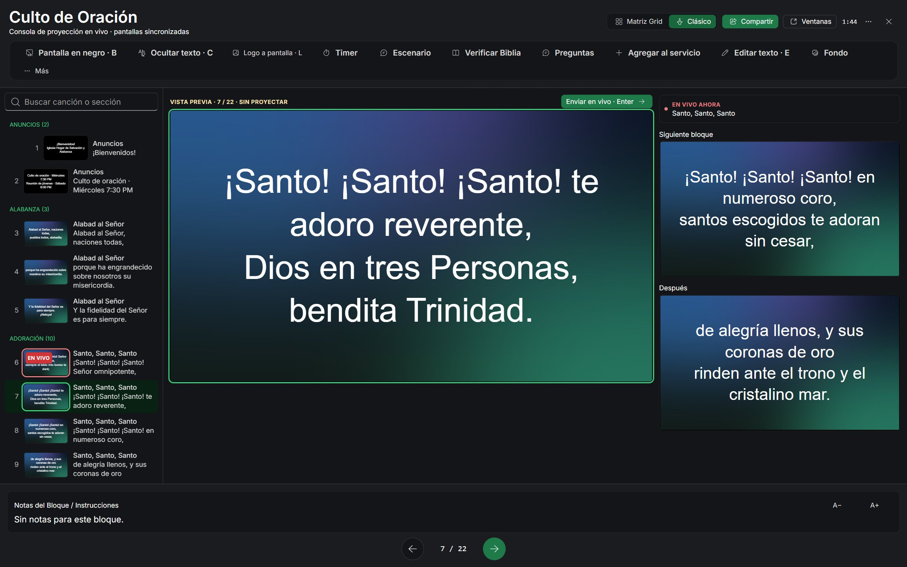

D1
Vista previa vs. en vivo
- Problema
- Preparar la siguiente diapositiva o corregir un error ocurría a la vista de todos.
- Hallazgo
- Operador y congregación necesitan ver cosas distintas en el mismo instante.
- Decisión
- Dos zonas separadas: el operador prepara y revisa en la vista previa; nada llega a la proyección hasta que lo confirma, incluso al editar en vivo.
- Por qué
- El público nunca ve un cambio a medio hacer, y el operador puede adelantarse sin miedo.
Trade-off: cada cambio requiere un paso más (confirmar). Los atajos de teclado para las acciones frecuentes compensan ese costo.
